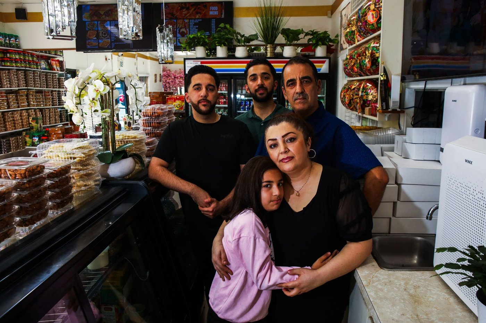
The Bay Area's 'Little Kabul' once welcomed Afghan refugees. Federal cuts are changing that.
Cuts to refugee resettlement are changing life for Afghans who built new lives in Fremont.
Read on San Francisco Chronicle →I’m a bilingual journalist based in the Bay Area, pursuing my Master of Journalism with a focus on business and investigative reporting at UC Berkeley’s Graduate School of Journalism. This summer, I was a news intern at Reuters in Seoul, where I became a jack-of-all-trades journalist covering the two Koreas, business, markets and climate.
Previously, I cut my teeth as a local reporter, with bylines in the San Francisco Chronicle, KQED, Mercury News, Fresno Bee and Los Angeles Daily News. I’m fortunate to have been recognized by industry professionals, receiving the 2026 Overseas Press Club Foundation Scholarship, the White House Correspondents’ Association Scholarship, a Pulitzer Center fellowship and more.

Cuts to refugee resettlement are changing life for Afghans who built new lives in Fremont.
Read on San Francisco Chronicle →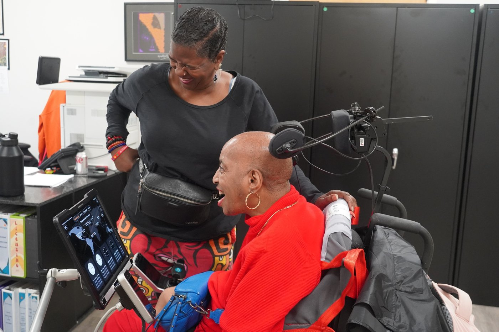
Federal Medicaid cuts threaten the in-home services that let disabled Californians avoid moving into facilities.
Read on KQED →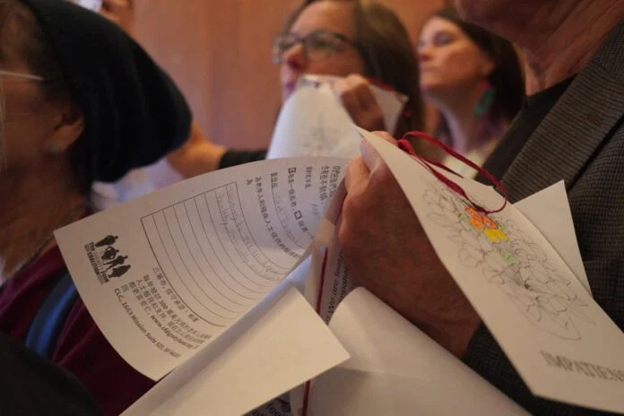
A community center serving immigrant seniors in the Excelsior district faces the loss of city funding under the mayor's proposed budget.
Read on AAJA VOICES →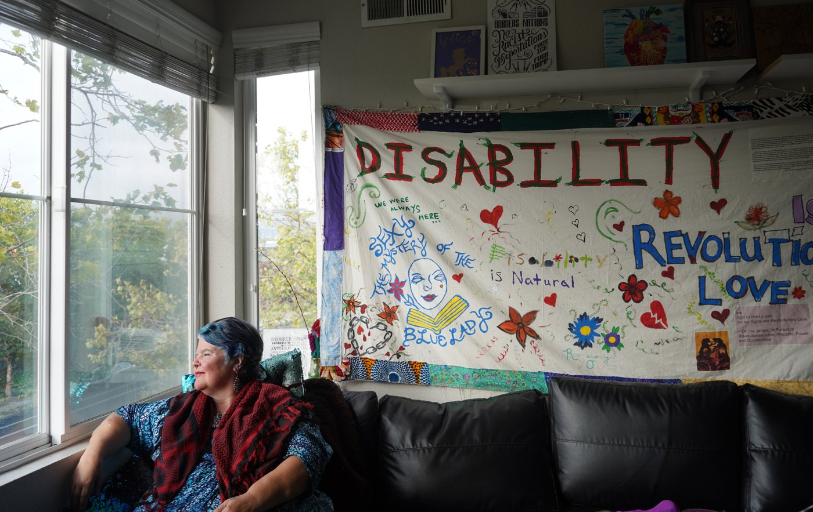
Funding for the in-home care that lets disabled Californians stay in their homes is under pressure from more than one direction.
Read on Mercury News →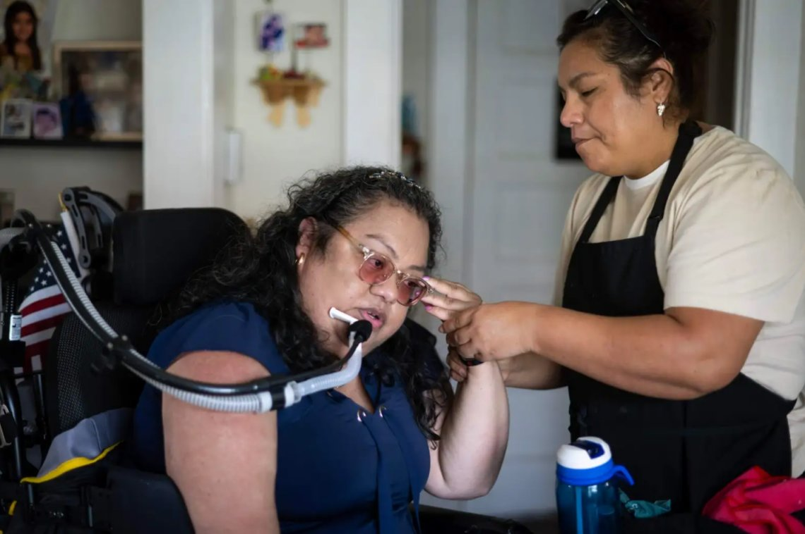
The governor's budget targets a Medi-Cal program of backup caregivers that older and disabled people turn to when their regular aide can't come.
Read on Los Angeles Daily News →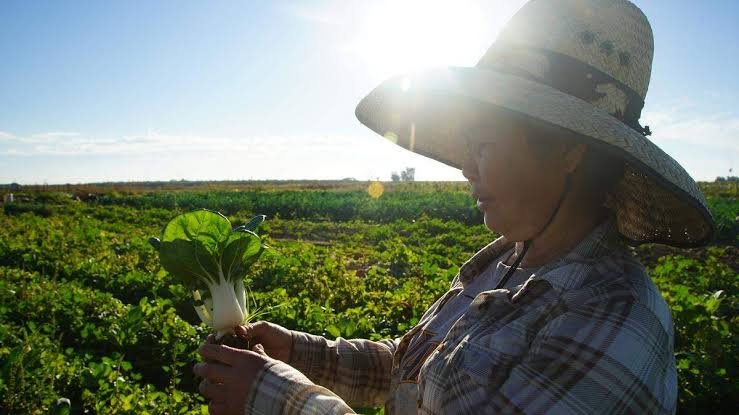
Cuts to a federal local-food purchase program are hitting small farms of color in Fresno.
Read on Fresno Bee →Police data seen by Reuters shows reported losses to stock-tip chatroom fraud rose by about a fifth in the first half of 2026, to roughly $250 million.
Read on Reuters →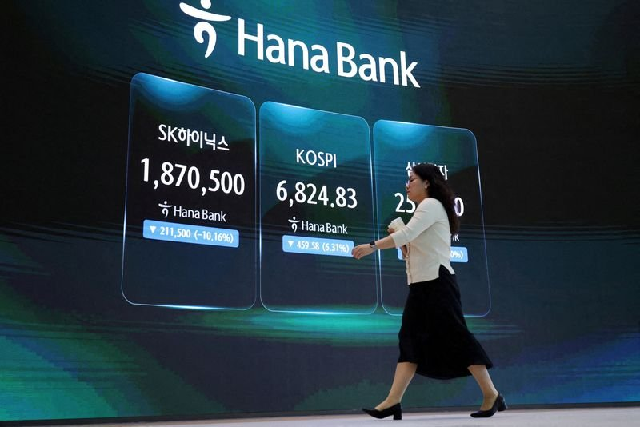
After a steep fall in the KOSPI, retail investors and officials face a psychological reckoning over leveraged trading.
Read on Reuters →A Reuters poll of economists expects July export growth to slow from June's near half-century high but stay strong on surging AI chip demand.
Read on Reuters →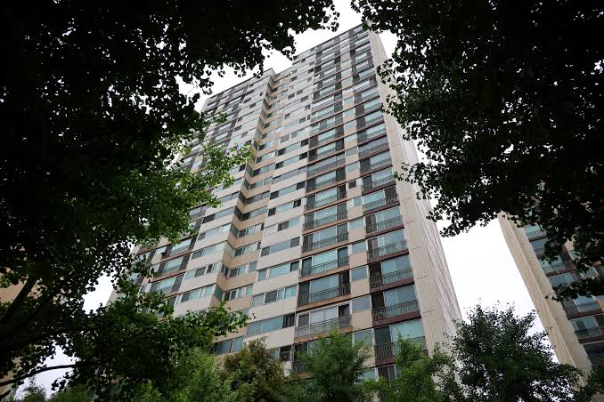
Documents showing the president extended credit to buyers of his Seoul apartment drew backlash from critics who say it undercuts his mortgage restrictions.
Read on Reuters →Local opposition to the power and water demands of a planned chip hub in the southwest is set to be among its biggest obstacles.
Read on Reuters →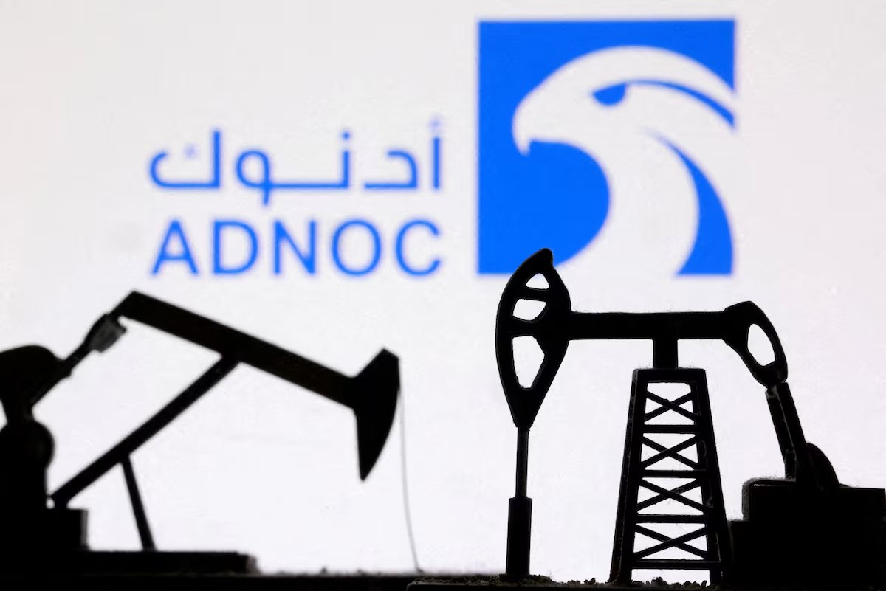
ADNOC signed a long-term energy security partnership with South Korea covering crude supply, emergency coordination and strategic storage.
Read on Reuters →A Reuters poll of economists points to South Korea's strongest annual export growth since 1978, driven by record chip shipments.
Read on Reuters →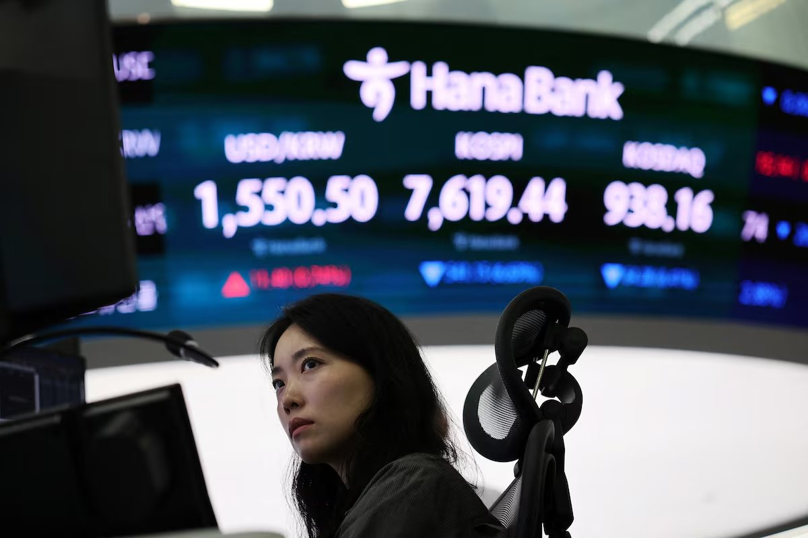
A look at how South Korea's stock market shifted from a steady bellwether into an AI-driven frenzy.
Read on Reuters →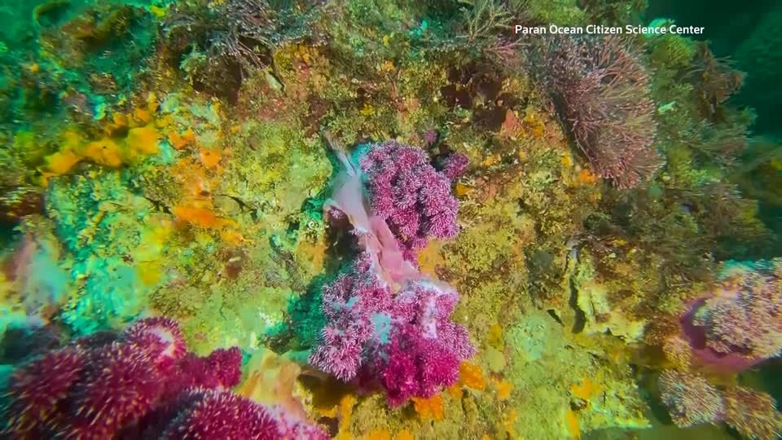
Divers and researchers on Jeju island are watching soft corals droop and die as warmer seas and harsher weather take a toll.
Read on Reuters →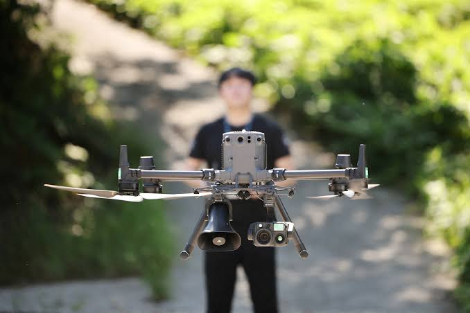
Drones with loudspeakers and thermal cameras urge older farmers in North Gyeongsang Province to rest during the country's worst heatwave in years.
Read on Reuters →Kim Jong Un replied to a congratulatory message from Putin marking the anniversary of Japan's surrender, saying the two countries' ties are deepening.
Read on Reuters →North Korean state media criticized South Korea's part in a US-led naval exercise and warned that Seoul and Washington would bear responsibility for any escalation.
Read on Reuters →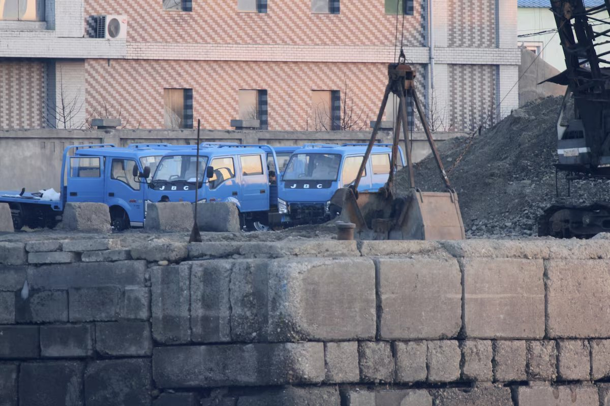
A rights group says North Korea's sanctioned coal and mineral exports have rebounded since UN monitoring of sanctions lapsed.
Read on Reuters →Kim Jong Un is steering North Korean spending toward state-run leisure and retail, from waterparks to luxury malls.
Read on Reuters →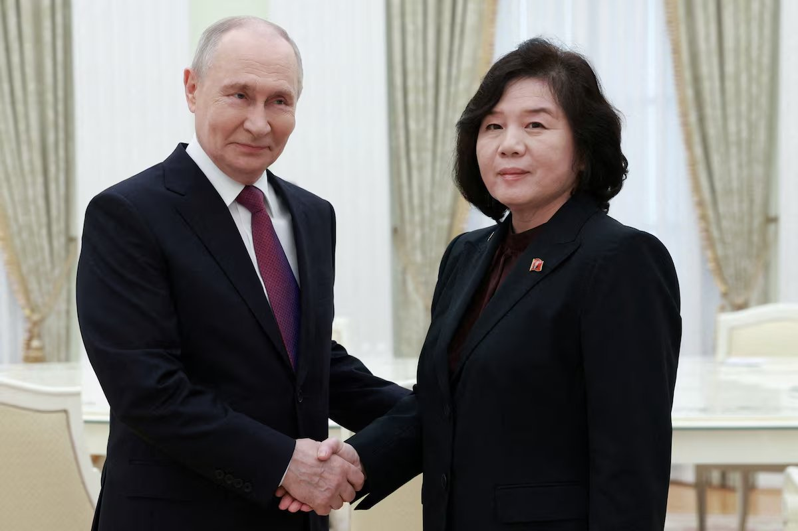
South Korea's central bank estimates North Korea's economy grew 3.5% in 2025, helped by closer trade with Russia and China.
Read on Reuters →